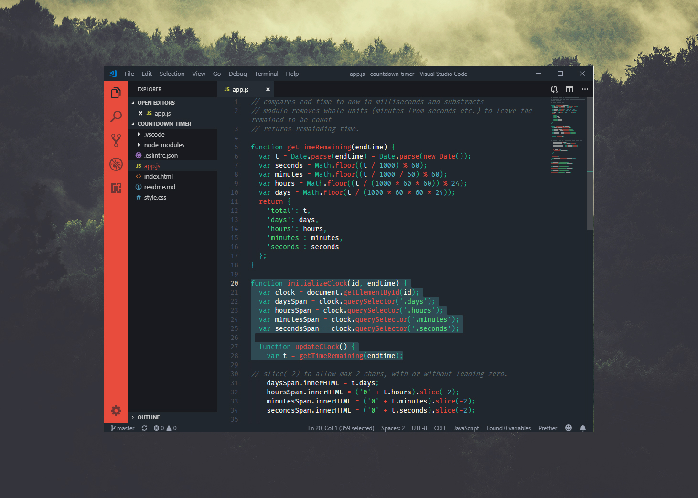

Henna
Henna is a colour theme inspired by my green-eyed redhead girl.
The colors are carefully selected with legibility and people with dyslexia in mind to create an accessible theme for Visual Studio Code
Download the theme on the VSCode Extension marketplace or fork it on GitHub
Recommended font is Fira Code with font ligatures.
